Adolescente de 15 anos de idade comparece à consulta com dor intensa no hipogástrio e abaulamento em região suprapúbica. Ainda não menstruou nem iniciou atividade sexual, mas apresenta dor pélvica cíclica. Ao exame físico, apresenta mamas em estádio M3, pelos pubianos em estádio P4 e genitália externa de aspecto normal. O diagnóstico provável dessa adolescente é:
Mulher de 40 anos de idade, 2G 2P (vaginais), realizou exercícios perineais após os partos, por seis meses. Nega perda involuntária de urina ou de fezes e não tem queixas sexuais. Nesse caso, qual das estruturas indicadas na imagem representa o músculo ileococcígeo, que compõe o músculo elevador do ânus, que foi fortalecido na fisioterapia do assoalho pélvico para se obter esse resultado?
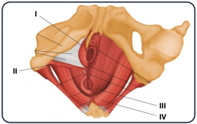
A imagem a seguir representa a produção ovariana dos esteroides por meio do conhecido mecanismo das duas células. Assinale a alternativa que apresenta a correspondência correta das substâncias, conforme os números indicados na imagem.
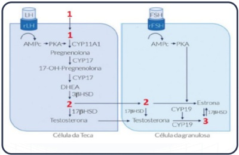
Mulher de 25 anos de idade, nuligesta, refere que não menstrua há dois anos. Informa menarca aos 12 anos de idade, seguida de ciclos regulares por cinco anos, depois evoluiu com ciclos irregulares e uxo reduzido. É atleta de alta performance e treina oito horas por dia. Ao exame físico: PA = 100 x 70 mmHg; FC = 68 bpm; IMC = 17,5 Kg/m²; 11,8% de gordura corporal. Exame ginecológico: mucosa vaginal pálida, com pregueamento reduzido, sem outras alterações. Resultados de exames complementares: FSH = 2,0 mUI/mL (VN 2,8 a 10,5 mUI/mL); Prolactina = 10,7 ng/mL (VN < 2 5 ng/mL); TSH = 2,9 mUI/mL (VN 0,4 a 4,0 mUI/mL). A figura a seguir representa o gráfico do teste de estímulo realizado com infusão de GnRH. A ultrassonogra a pélvica revelou: útero de 28 cm³ em anteverso exão, eco endometrial de 2 mm; ovário esquerdo de 1,9 cm³; ovário direito de 1,3 cm³; sem folículos visíveis e sem massas anexiais. A respeito desse caso clínico, assinale a alternativa correta.
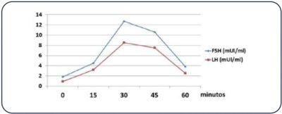
Mulher de 30 anos de idade compareceu a consulta ginecológica referindo que, desde a menarca, apresenta “corrimento vaginal”, sem odor ou prurido. Trouxe o resultado da citologia do colo do útero e informa que o resultado sempre revela a presença de processo inflamatório inespecí co. Foi submetida à colheita de conteúdo vaginal para a realização de exame de microscopia a fresco, representado na imagem a seguir. Qual deve ser a conduta nesse caso?
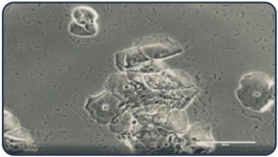
Revisar: possível letra faltando em enunciado
Mulher de 32 anos de idade tem antecedente de cirurgias bariátrica do tipo malabsortivo com by-pass jejunoileal. Seu peso atual é 85 kg, é portadora do vírus HIV em uso de AZT, 3TC e Abacavir, e faz tratamento para tuberculose pélvica. Para início de contracepção, qual é o método indicado no momento para essa paciente?
Mulher de 49 anos de idade, previamente hígida, apresentou convulsão tônico-clônica e está em investigação com o neurologista. Iniciou uso de carbamazepina. Solicita orientação sobre método anticoncepcional. Com relação ao menor risco, de acordo com os critérios de elegibilidade, qual é a melhor opção para essa paciente?
Mulher de 23 anos de idade, nuligesta, apresenta ciclos menstruais irregulares e sua última menstruação foi há seis meses. Nega atividade sexual há três anos. No exame físico não se detecta anormalidade. Exames: Beta hCG Negativo; FSH = 0,3 mUI/mL (Referência: 3,4 a 10 mUI/mL), prolactina = 15 ng/mL (Referência: 5 a 25 ng/mL). Nesse caso, qual é a hipótese diagnóstica mais provável?
Mulher de 18 anos de idade, atendida na emergência com quadro de sangramento vaginal intenso há duas horas, hipotensão e taquicardia. DUM há nove dias. Ciclos menstruais prévios regulares. Beta hCG negativo. Após hidratação e hemotransfusão, rapidamente instaladas, qual é a conduta a ser adotada em seguida?
Mulher de 36 anos de idade, nuligesta, infértil, com histórico de síndrome dos ovários policísticos, deseja engravidar. Exames complementares normais, exceto a histeroscopia com biópsia (realizada devido ao espessamento endometrial à ultrassonografia), que revelou hiperplasia endometrial com atipias. Para o melhor cuidado da paciente, qual é a conduta nesse caso?
Mulher de 19 anos de idade, refere ciclos de longa duração desde a menarca, aos 14 anos. Frequentemente tem períodos de amenorreia de até quatro meses, e após, apresenta sangramentos volumosos e longos. Nega atividade sexual. Informa que após ter apresentado sangramento de grande volume (com coágulos), com duração de 14 dias, mantém spotting há quatro dias. Traz beta hCG negativo e ultrassonogra a pélvica com espessura endometrial de 3 mm. Exame físico: PA = 115/75 mmHg, FC = 80 bpm, IMC = 22 Kg/m². Ao exame pélvico, revela hímen íntegro, escasso sangramento escuro no introito vaginal. Para cuidar dessa paciente, qual a melhor opção terapêutica nesse momento?
Mulher de 22 anos de idade refere irregularidade menstrual (ciclos a cada 45-90 dias), acne e hirsutismo, desde os 16 anos de idade. Menarca: 13 anos de idade. DUM há 75 dias. No momento, sem tratamento. Exame físico: IMC = 19 kg/m², escala de Ferriman e Gallwey 14. Exame de beta hCG negativo. Trouxe exames laboratoriais, conforme imagem, realizados há duas semanas. Nesse caso, qual é o diagnóstico?
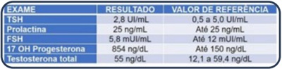
Adolescente de 16 anos de idade vem à consulta queixando-se de pelos em excesso. Menarca aos 13 anos de idade, ciclos irregulares, de 18 a 45 dias, com duração de 8-10 dias. Nega atividade sexual. Ao exame físico: IMC = 24,5 Kg/m² , face depilada e escore de Ferriman- Gallwey de 10. Traz exames laboratoriais recentes: testosterona e androstenediona dentro dos valores de referência, glicemia = 88 mg/dL. Além da recomendação de perda de peso e orientação de anticoncepcional combinado com acetato de ciproterona, qual é a melhor terapêutica a ser associada a seguir, nesse caso?
Mulher de 50 anos de idade, nuligesta, será submetida à histerectomia abdominal por hiperplasia endometrial complexa com atipias. O resultado do exame preventivo revelava presença de Foi realizado exame do conteúdo vaginal conforme apresentado na imagem. Nesse caso, qual é a melhor orientação?
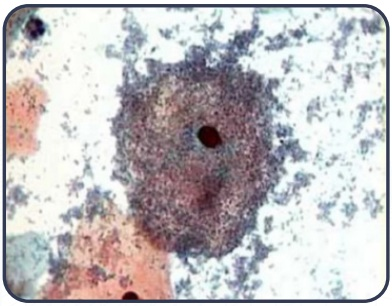
Mulher de 28 anos de idade queixa-se de corrimento vaginal. Ao exame, pH vaginal de 5,2 e microscopia a fresco representada na imagem. Nesse caso, o tratamento do parceiro deve ser realizado com:
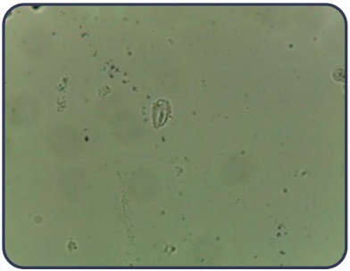
Mulher de 26 anos de idade vem à consulta por apresentar lesão genital indolor. Nega secreção vulvovaginal ou prurido. Nega alergias medicamentosas. Ao exame genital, identi ca-se úlcera rme, circular, no lábio direito, de aproximadamente 1 cm de diâmetro, conforme imagem, sem linfonodopatia palpável. Nesse caso, qual é o tratamento mais adequado?
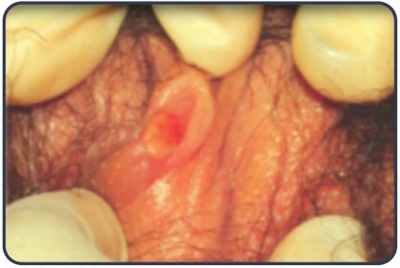
Revisar: possível letra faltando em enunciado
Adolescente de 16 anos de idade, sexualmente ativa, sem parceiro xo, em uso irregular de preservativo, procura atendimento com queixa de corrimento vaginal associado a sangramento intermenstrual. Ao exame físico, apresenta dor discreta à mobilização do colo e leucorreia mucopurulenta no orifício externo. O tratamento dessa paciente deverá incluir:
Mulher, 28 anos de idade, queixa-se de dor em hipogastro há dois dias, com piora progressiva. Refere relacionamento estável, há 5 anos, com parceiro único. Utiliza coito interrompido como método contraceptivo. Ao exame físico: T = 38,6°C, conteúdo vaginal amarelado, colo uterino hiperemiado e doloroso à manipulação; dor à mobilização do útero e anexos. Ultrassonogra a realizada no momento revela anexo direito conforme imagem. Exames laboratoriais: Leucócitos = 27.500/mm³; PCR = 57 mg/dL. Nesse caso, qual é a conduta imediata a ser adotada?
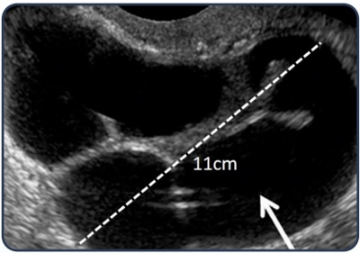
Paciente de 53 anos de idade apresenta incontinência urinária aos médios esforços há dois anos quando começou o climatério. Nega polaciúria ou enurese. Gesta 2, para 2, não apresenta outras queixas do climatério. Função sexual normal e sem queixas intestinais. Ao exame, apresenta Aa 0, Ba +1, C -3, Ap -2, Bp -2 e grau 2 de força perineal. Ocorre perda urinária pequena na manobra de Valsalva com teste do absorvente de 5 g. Nesse caso, o tratamento indicado será:
Mulher de 48 anos de idade, G3 P3 (cesáreas), refere perda urinária ao tossir e espirrar, em gotas. Também informa ter 10 miccões diárias e acordar três vezes à noite para urinar. Nega disúria e hematúria. Nega tabagismo. Nesse caso, qual é o diagnóstico mais provável?
Mulher de 55 anos de idade refere perda urinária aos esforços após cirurgia de sling realizada há um ano. Analise o estudo urodinâmico dessa paciente, conforme imagem a seguir. Qual dos tempos do exame, representados pelas letras A, B, C e D, são considerados fundamentais para o diagnóstico de incontinência urinária de esforço recidivada?
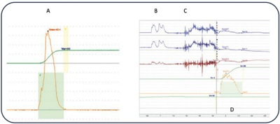
Mulher de 47 anos de idade refere sangramento uterino anormal com aumento da quantidade e dias de uxo menstrual. É portadora de hipertensão arterial, controlada com losartana, tabagista de 15 cigarros/dia. Exame pélvico: útero levemente aumentado. Exame de ultrassonogra a revela: útero medindo 90 x 77 x 53 mm, miométrio heterogêneo, miomas intramurais (3,8 e 3,5 cm os maiores) e um submucoso (2,1 cm). Exame histeroscópico conforme as imagens a seguir. A paciente não deseja tratamento cirúrgico. Nesse caso, qual deve ser a conduta adotada até a menopausa?
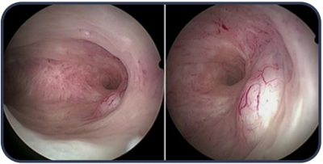
Mulher de 35 anos de idade, G2 P2, relata sangramento uterino abundante há nove meses, pois não respondeu ao tratamento com ácido tranexâmico, ácido mefenâmico, progesterona oral, progesterona intramuscular e DIU de progesterona. Informa que não deseja realizar cirurgia. Ao exame pélvico, apresenta útero miomatoso aumentado de volume. No exame ecográfico, apresenta vários miomas uterinos, o maior com 9 cm de diâmetro. Após realizar o tratamento visualizado na imagem, a paciente permaneceu internada por:
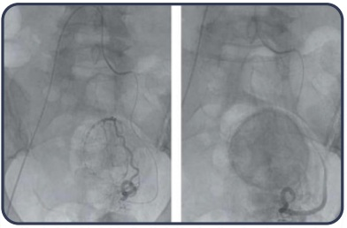
Paciente de 30 anos de idade vem à consulta com quadro de dismenorreia cíclica com piora gradativa. Refere ter sido diagnosticada com endometriose e já utilizou contraceptivo hormonal combinado e progestágeno isolado, sem melhora adequada. Na laparoscopia desse caso, apresentada na imagem, a seta branca indica:
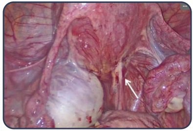
Mulher de 33 anos de idade apresenta queixa de dor pélvica crônica, associada a dismenorreia e dispareunia de profundidade. Ao exame físico apresenta útero doloroso à palpação, com mobilidade reduzida, sem outras anormalidades. Ultrassonogra a transvaginal realizada com preparo intestinal não revelou alterações significativas dos órgãos pélvicos. A conduta preconizada para essa paciente é:
Adolescente de 16 anos de idade comparece referindo dor pélvica, de forte intensidade, no primeiro dia da menstruação, que a impede de ir à academia. DUM há 8 dias. Menarca aos 13 anos de idade, os ciclos eram irregulares até um ano atrás, quando a dor iniciou. Atualmente tem ciclos regulares, 29/4 dias. Nega relações sexuais. Ao exame físico, mamas e abdome são normais, sem dor à palpação. Nesse caso, qual conduta inicial NÃO seria adequada?
Paciente de 52 anos de idade, nuligesta, última menstruação há seis meses, comparece ao ginecologista com queixa de ondas de calor intensas, predominantemente noturnas, que a incomodam. Não tem outras queixas associadas. No momento está sem parceiro, não tem queixas urogenitais. É hipertensa, controlada com medicação. Pratica atividade física diariamente. Ao exame físico: PA = 125 x 85 mmHg; FC = 68 bpm; IMC = 23,5 kg/m². Exame físico ginecológico sem alterações. Realizada propedêutica habitual para essa paciente. Resultados de mamogra a, citologia oncótica, colonoscopia, lipidograma e glicemia normais. Nesse caso, para o melhor cuidado da paciente, a terapêutica mais adequada é:
Abordagem medicamentosa Mulher de 63 anos de idade, branca, secretária. G2 P2. Menopausa aos 44 anos de idade, nega uso de TH devido à história pessoal de câncer de mama. Intolerância à lactose, sedentária, tabagista (20 cigarros/dia desde a adolescência), em uso de levotiroxina 75 mcg/d, vitamina D 1000 UI/dia. Informa estar preocupada com risco de fraturas, pois sua mãe teve fratura de quadril. Recebeu resultado de densitometria óssea (conforme imagem a seguir). Traz exames laboratoriais normais (Ca = 9,5 mg/dL; vit D = 35 ng/mL; TSH = 3,2 UI/mL). Além das orientações de prevenção de queda e atividade física, qual é a conduta para o melhor cuidado dessa paciente?
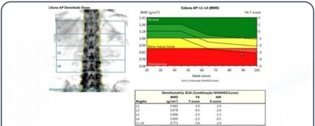
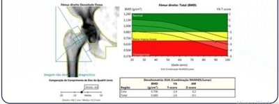
Mulher de 47 anos de idade vem à consulta para mostrar mamogra a BIRADS® 2 e resultado de citologia oncótica normal, ambos realizados há um mês. Relata que usava anticoncepcional combinado (EE2 0,30 mcg + levonorgestrel 0,15 mg). Há dois anos, após interromper a pílula, cou sem menstruar e iniciou nos últimos meses com calorões, praticamente diários, motivo pelo qual, por não conseguir passar em consulta devido à pandemia, retomou o uso do anticoncepcional em fevereiro de 2021. Informa usar hidroclorotiazida e losartana para tratamento de hipertensão arterial. Refere ser G3 P3. Ao exame físico: IMC = 31 kg/m2; PA = 125/80 mmHg; mamas, abdome, exame especular e toque vaginal sem alterações. Nesse caso, a conduta a ser adotada é:
Mulher de 34 anos de idade vem à consulta com queixa de dor mamária bilateral, cíclica, com melhora ao início do período menstrual. A conduta a ser adotada nesse caso é orientar:
Mulher de 28 anos de idade, G1 P0 A1, apresenta infertilidade há dois anos. O espermograma do parceiro tem parâmetros dentro da normalidade. A histerossalpingografia e a ultrassonografia estão apresentadas nas imagens. Qual deve ser o próximo passo na conduta a ser adotada para o melhor cuidado dessa paciente?
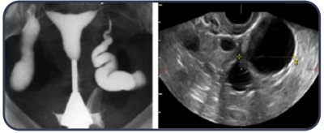
Mulher de 32 anos de idade, casada, refere que, desde o último parto há dois anos, apresenta diminuição das fantasias e receptividade para a atividade sexual, com redução na lubri cação vaginal durante a relação. Nega comorbidades e não apresenta queixas específicas no relacionamento conjugal. Exames hormonais dentro dos limites da normalidade. É uma opção terapêutica para essa paciente o uso de:
Mulher de 55 anos de idade, com nódulo de 1,5 cm de diâmetro em mama direita, há três meses. Linfonodos axilares de aspecto habitual. A mamografia e a ultrassonografia estão apresentadas nas imagens a seguir: Para o melhor cuidado dessa paciente, qual deve ser a conduta nesse momento?
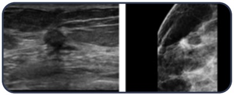
Mulher de 45 anos de idade apresenta nódulo em mama esquerda no quadrante superior externo de 5 cm, assintomática. Nunca foi submetida a rastreamento para câncer de mama. O nódulo é endurecido, não dolorido e móvel. Apresenta um linfonodo axilar palpável. A biópsia por punção revelou ser um carcinoma ductal invasor pleomór co triplo negativo. Qual deve ser o tratamento inicial para essa paciente?
Revisar: possível letra faltando em enunciado
Mulher de 62 anos, assintomática, apresenta exame clínico das mamas compatível com a normalidade. A mamogra a de rastreamento, representada na imagem, mostra múltiplas microcalcificações pleomórficas. Nesse caso, para o melhor cuidado da paciente, qual é a conduta a ser adotada?
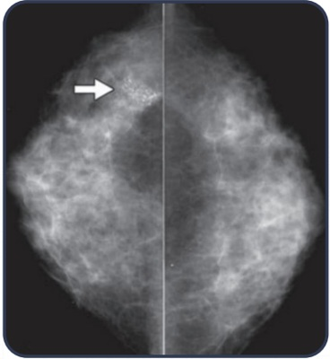
Mulher de 29 anos de idade assintomática, sem comorbidades, retorna ao consultório para receber laudo da colpocitologia oncótica, representado na imagem. Os resultados anteriores da colpocitologia, realizados aos 25 e 26 anos de idade, foram normais. Com base nessas informações, qual é a orientação para a paciente?
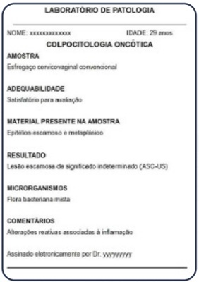
Mulher de 46 anos de idade foi submetida à histerectomia vaginal por mioma uterino há um mês. Relata que foi submetida a conização há 16 anos, trazendo laudo histopatológico de NIC II com margens livres, e continuou fazendo rastreio de forma regular, com citologia normal há um ano. Segundo as Diretrizes Brasileiras para o rastreamento do câncer do colo do útero, a conduta para essa paciente é:
Mulher de 24 anos de idade vem à consulta queixando-se de lesões pruriginosas em vulva, que iniciaram há dois meses. Paciente HIV positiva em tratamento com terapia antiretroviral e pouca aderência ao tratamento. Exame genital conforme demonstrado na imagem a seguir. Nesse caso, qual é a orientação inicial?
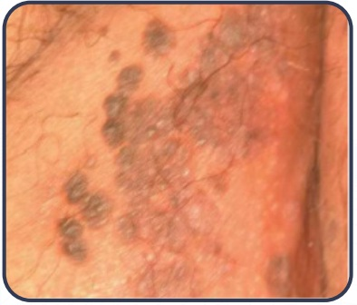
Mulher de 44 anos de idade retorna, três semanas após cirurgia, para tratamento de neoplasia intraepithelial cervical (NIC) 2, para receber o resultado anatomopatológico. O procedimento foi realizado por cirurgia de alta frequência, e o resultado confirmou NIC 2, com margens do espécime cirúrgico comprometidas por lesão. Exame especular representado na imagem. Nesse caso, para oferecer o melhor cuidado à paciente, qual é a orientação inicial para a conduta?
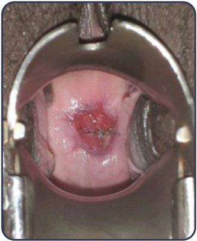
Mulher de 39 anos de idade, assintomática, nuligesta, comparece para consulta ginecológica e é constatada lesão de 4 c m no colo uterino. O último exame colpocitológico foi há quatro anos. A biópsia foi conclusiva para carcinoma epidermoide com invasão estromal de 6 mm. O paramétrio no exame apresenta-se livre. Considerando que a paciente informa que ainda deseja engravidar, a conduta será realizar a traquelectomia
Mulher, 38 anos de idade, nuligesta, IMC 39 kg/m², apresenta sangramento uterino aumentado com biópsia de endométrio revelando hiperplasia endometrial atípica. Refere intenção de gestar no futuro. Nesse caso, a orientação é realizar:
Mulher de 55 anos de idade, obesa e portadora de diabetes tipo 2, refere sangramento irregular. O exame ginecológico revela colo uterino de aspecto habitual. A ultrassonogra a mostra útero de 120 cm³ , miométrio homogêneo e endométrio com espessura de 12 mm, ovários normais. A histeroscopia com biópsia realizada foi conclusiva para hiperplasia endometrial complexa com atipias. Qual é a conduta para o melhor cuidado dessa paciente?
Mulher de 59 anos de idade é atendida em Unidade Básica de Saúde com queixa de aumento de volume abdominal há três meses. A ultrassonogra a, representada na imagem a seguir, revela massa pélvica heterogênea contendo áreas sólidas e papilas medindo 16 cm no maior diâmetro, bem como ascite de grande volume. A dosagem de CA125 é 1286 UI/mL. Nesse caso, qual é a hipótese mais provável?
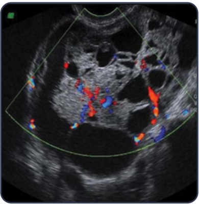
Mulher de 75 anos de idade refere prurido vulvar e aparecimento de nódulo irregular sobrelevado no 1/3 superior do grande lábio direito, que às vezes sangra. Foi realizada a biópsia da lesão que mostrou tratar-se de carcinoma microinvasor. Nesse caso, o estadiamento e a conduta para o melhor cuidado são, respectivamente,
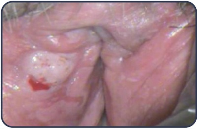
Puérpera, G3 PC3, pós-parto de cesariana de urgência no intraparto com 37 semanas de gestação. O pós- operatório imediato foi sem intercorrências. Retorna com 10 dias de pós-operatório para revisão e retirada dos pontos cirúrgicos. Nessa consulta, refere perda de urina eventual em pequena quantidade e não relacionada aos esforços. O exame vaginal verifica saída de urina no fundo de saco vaginal anterior, quase na altura do colo uterino, em pequena quantidade, por meio de um pertuito de cerca de 2 mm de diâmetro. Nesse caso, a conduta a ser adotada é:
Mulher de 54 anos de idade, G2 P2, refere perda de urina ao tossir, abaixar e carregar peso, há cinco anos, além de perdas durante as relações sexuais. Faz uso de absorvente com duas trocas por dia. Refere ainda “vagina larga durante as relações”. Ao exame físico: IMC 28 kg/m², perda de urina ao esforço. A imagem apresentada corresponde ao exame genital, sob esforço. Qual é a classificação POP-Q: Ba, C, Bp, respectivamente, do exame genital dessa paciente?
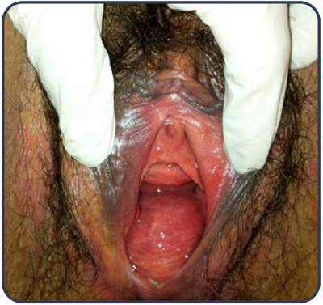
Mulher de 51 anos de idade, refere perda involuntária de urina há seis meses. Analise a imagem a seguir. Qual é a parte do estudo urodinâmico representada na imagem e qual é o provável diagnóstico baseado no traçado?
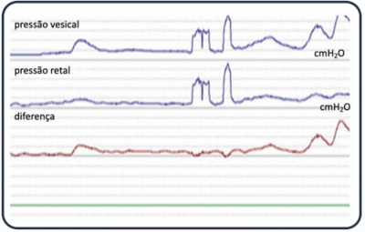
Inf ecção puerperal endometrite puerperal Mulher de 30 anos de idade, diabética tipo 1, retorna à maternidade no 5º dia pós-parto vaginal, com quadro de febre e dor na região perianal. Ao exame, a região perianal apresentava-se dolorosa à palpação, com edema e eritema estendendo-se à região glútea, e deiscência da episiotomia. Nesse caso, é correto afirmar:
Médico especialista em Ginecologia e Obstetrícia deseja divulgar que, em seu consultório, utiliza o laser para tratamento da atrofia vaginal. De acordo com as normas sobre publicidade médica vigentes, qual estratégia de
Mulher de 41 anos de idade, G2 P2, em união estável, apresenta resultado de carcinoma microinvasivo do colo uterino IA1 após conização. É proposto para a paciente a complementação da cirurgia com histerectomia extrafacial. Quanto à aplicação do termo de consentimento livre e esclarecido, é correto afirmar: Respostas: 1 12 23 34 45